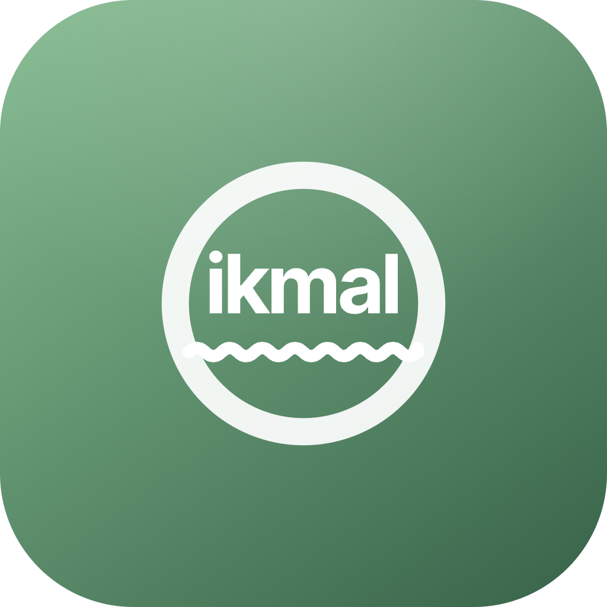

LOCAL WRITING QUALITY
Ikmal Editor
Starting
LOCAL CHECK
Try a passage
Pronoun links
✦
Suggestions will appear here.
Checks stay on this computer.LOCAL HISTORY
Recent checks
◷
No recent checks.
Checks stay on this computer.APP CONTROL
Service settings
Ikmal services
Runs LanguageTool and the quality proxy for browser extensions.
LanguageToolChecking…
Quality checksChecking…
Style guide
Optionally apply approved rules from an imported guide.
ENDPOINTS
http://127.0.0.1:8096/v2
Use http://127.0.0.1:8096/v2 in the LanguageTool extension.